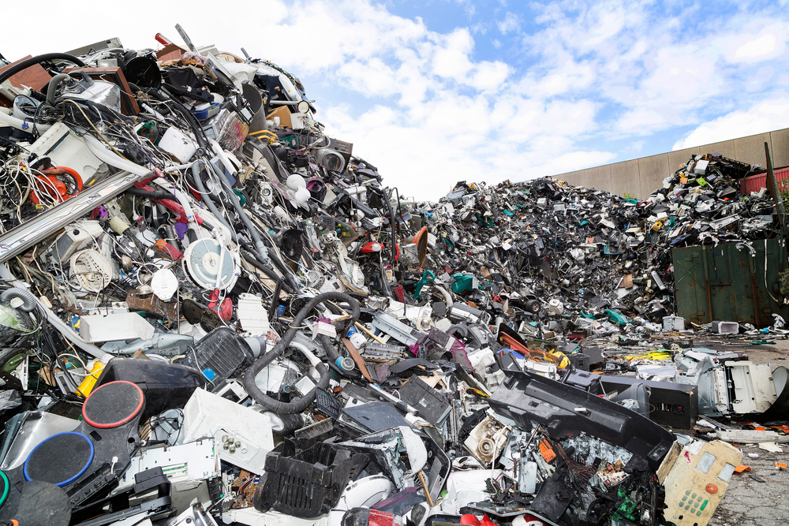
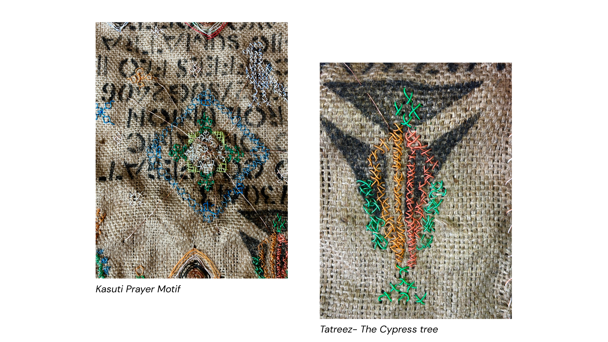
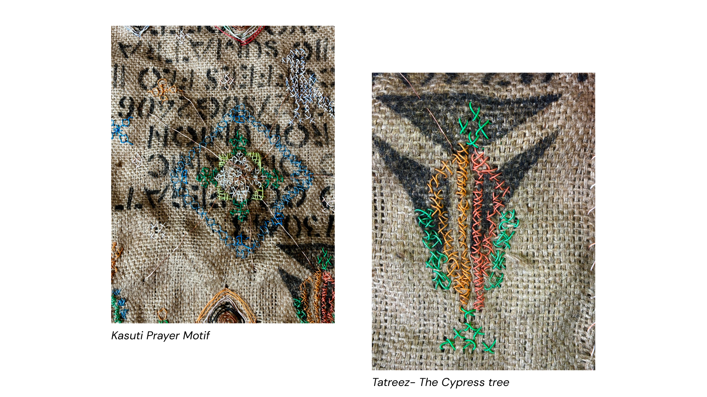

The Tied Up Current
A New Perspective on Electrical Wire Waste
Manasvi Joshi
Scrap Lab, Spring 2025
.png)
The Afterlife of Electrical Wires
In our rapidly advancing technological world, electrical wires are often rendered obsolete due to planned obsolescence and the swift pace of innovation. Devices become incompatible, and repairs are frequently unfeasible, leading to an ever-growing accumulation of electronic waste.
According to the Global E-waste Monitor 2024, the annual generation of e-waste is increasing by 2.6 million tonnes, projected to reach 82 million tonnes by 2030. Alarmingly, only 22.3% of this waste was properly collected and recycled in 2022, leaving valuable resources unaccounted for and posing environmental risks.
Recycling Copper?
Copper, a primary component of electrical wires, is infinitely recyclable without loss of quality. However, the recycling process is energy-intensive, consuming about 85% less energy than mining new copper, yet still requiring significant energy input. This raises concerns about the sustainability of recycling practices, especially when considering the environmental impact of energy consumption.
What are Cables?
- Connections - physical and symbolic links between systems and people
- Messes - tangled realities of modern infrastructure
- The Unseen Backend - the skeleton beneath technology
- Carriers of Light - bringing power, electricity, function
- Communication -transporting messages across space and time
When we discard cables, we discard more than materials—we discard meaning.
The Grids of Embroidery
Embroidery is the craft of storytelling through thread. In cross-stitch embroidery, threads follow a fixed grid-a structured logic that echoes the wire grids within electrical cables. Although copper wires aren’t as soft or free-flowing as threads, their thinness allows them to bend and adapt to grid-based patterns with precision and constraint.
Embroidery is also about the relationship between form and surface—just like cables embedded into walls, embroidery embeds meaning onto fabric.
Cultured Waste
This artwork repurposes copper wires not just functionally, but culturally. In most societies, waste is excluded from tradition, ritual, or beauty. This piece aims to break that boundary. Why can’t discarded cables become vessels of culture, memory, and spirituality?
Embroidery: A Tapestry of Cultural Narratives
- Mexican "Ojo de Dios" (Eye of God): A spiritual symbol representing the power to see and understand unseen things. Traditionally crafted with yarn and sticks, it embodies protection and guidance.
- Indian Kasuti Embroidery: Originating from Karnataka, India, Kasuti involves intricate patterns stitched onto fabric, often depicting religious symbols, animals, and geometric designs. Each piece can contain up to 5,000 hand stitches, reflecting meticulous craftsmanship.
- Palestinian Tatreez: A traditional form of embroidery practiced by Palestinian women, Tatreez patterns are passed down through generations, encoding stories, heritage, and identity into the fabric.
 

The Scene: A Stitchwork of Spiritual Connection
- Cypress trees from Tatreez anchor the ground.
- Kasuti motifs represent celestial bodies-the sun and moon-guiding forces above.
- At the center, a Kasuti prayer symbol becomes the heart of the work-calling for unity, healing, and cultural connection.
- From this prayer, raw copper wires emerge, branching outward in all directions-forming links, bridges, and possibilities.
- Overseeing the scene is the Eye of God, watching a world attempting to reconnect through repair and reverence.
The entire composition speaks of interdependence and spiritual circuitry. It suggests that cultural connection, like electricity, needs a medium—a conduit—to flow through. In this case, it’s copper. Not melted. Not erased. Just redirected.
The Process
.png)
Where Did I Start?
My exploration began with working on broken electronics—curious about their interiors and frustrated by how quickly they became unusable. I began observing the material culture of planned obsolescence: products designed to fail, resist repair, or fall out of use far too soon.
Among these electronics, wires stood out. They were:
- Linear and structured, yet tangled and messy.
- Functional, yet often discarded.
- Visually organized in color, yet never meant to be seen.
Can I take something built to be invisible and rigid, and make it expressive and fluid?

What Was the Material Like?
I began dissecting discarded ethernet and USB-C cables, peeling away their rubber skins. Here's what I discovered:
Ethernet Cables:
- Encased in a thick rubber sleeve.
- Inside were 8 inner wires, twisted into 4 color-coded pairs:
- Blue/Blue-White – usually the primary signal path.
- Orange/Orange-White – used in data transfer.
- Green/Green-White – supports extended signal pathways.
- Brown/Brown-White – auxiliary or integrity-based functions.
USB-C Wires:
- Contained 4 wires: red, green, white, black.
- Simpler in layout but offered a bolder color palette.
Physical Qualities:
- Less flexible than thread, but not too stiff.
- Easy to cut and shape using scissors.
- The rubber body helped untangle knots—mistakes weren’t permanent.
- The copper tip functioned like a needle when piercing fabric.

Discovering Embroidery
My introduction to embroidery came through a Tatreez workshop at the college. There, I realized:
- Embroidery is mathematical and poetic-grids, symbols, and precision.
- Tatreez is deeply tied to identity and storytelling.
- Could wires-discarded and cold—carry cultural meaning the way threads do?
So I tried.
I experimented with metal mesh frames, but:
- Their rigid structure clashed with the natural tension of wires.
- The grid cells couldn't hold more than 3–4 wires comfortably.
I needed a more adaptable surface.

Why Jute?
- Natural texture: Its coarse weave gave wires grip without needing glue.
- Visible grid: The open warp and weft threads mimicked embroidery mesh, but with more flexibility.
- Eco-friendly: Jute is a biodegradable, sustainable fiber, aligning with the project's ethos of reuse.
- Aesthetic warmth: The earthy tones of jute softened the industrial feel of the wires.
It created a balance: organic meets synthetic.
Planning the Work
Before stitching, I mapped out ideas:
- On paper, sketching grid-based compositions.
- On a Figma board, where I layered images, symbols, and color experiments.
I researched traditional motifs and plotted their locations in relation to each other, like choreography.

Getting Started

- Jute was too floppy on its own, so I used embroidery hoops for stability.
- The copper wire tips pierced the fabric easily—no extra needle needed.
- I marked grids, counted intersections, and mapped symbols carefully.
- This process was portable—I carried it with me to the river, the park, anywhere quiet.
The act of stitching became meditative.
Undoing, redoing, observing.
It helped me mentally, like a tactile journal.

What This Work Suggests
Beyond symbolism, this artwork makes a material claim:
- That discarded wires can act as thread.
- That cables, often dismissed as waste, can tie cultures together.
- That embedding technology into cultural form might be more than metaphor—it might be material truth.
It Opens a Dialogue
- Can waste wire become a new form of stitch?
- Can we embed power, connection, and culture into what was once discarded?
- Can we build meaning from mess?
This process, from dismantling to rethreading, suggests that the future of sustainability lies not only in recycling, but in rewiring how we perceive value.